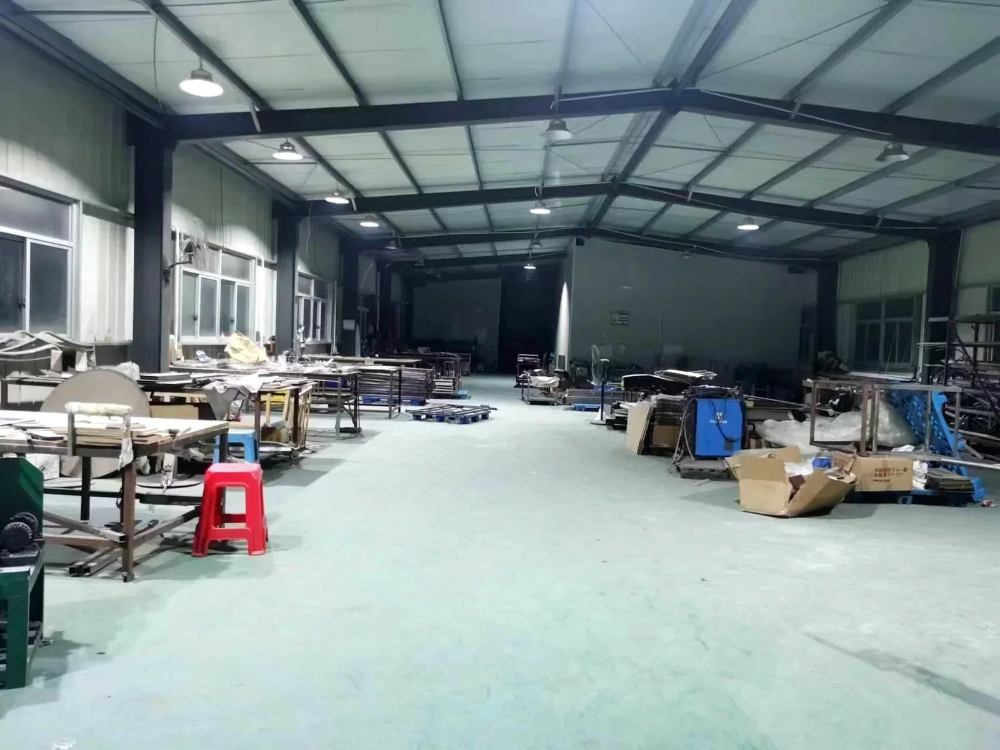
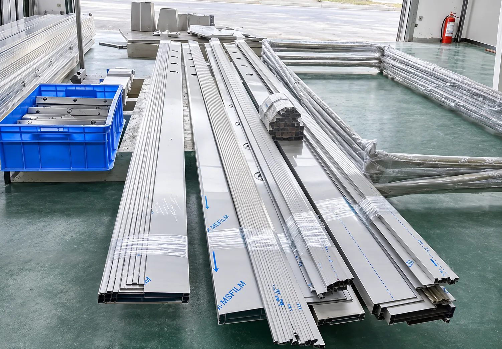
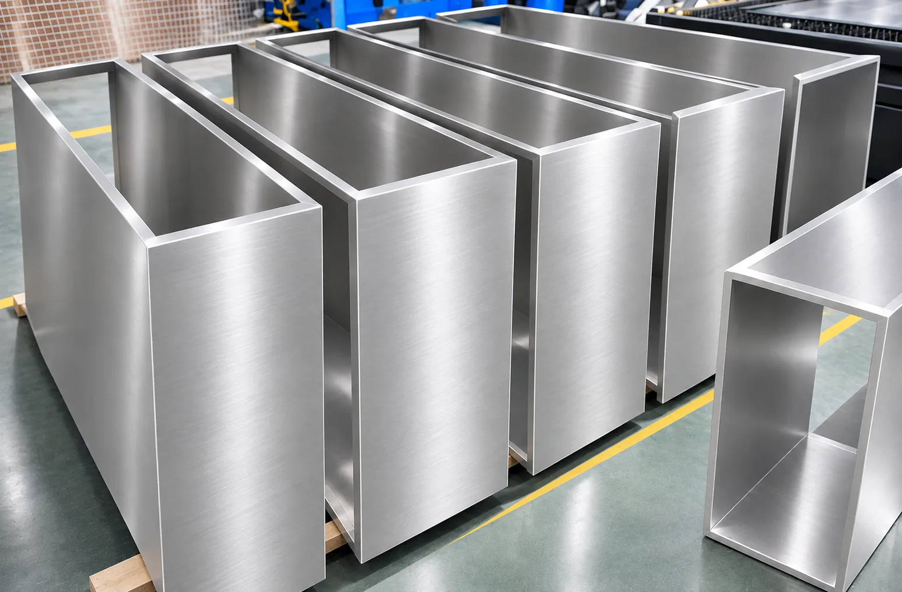
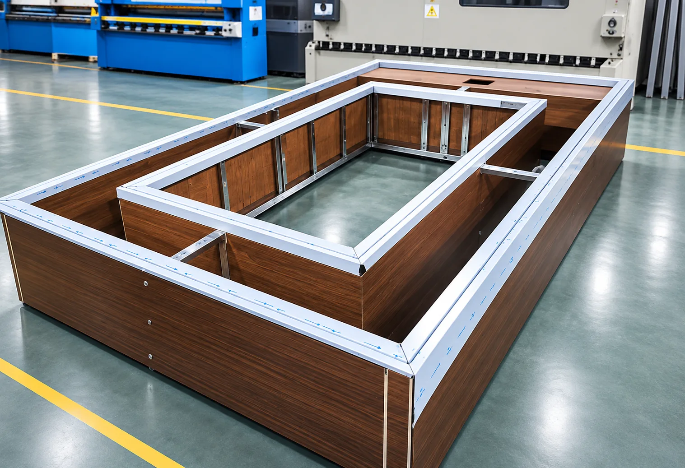
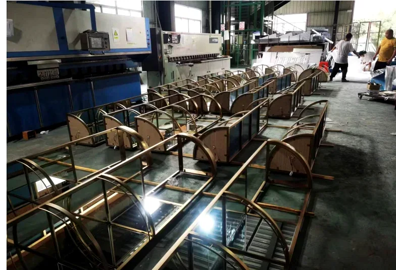
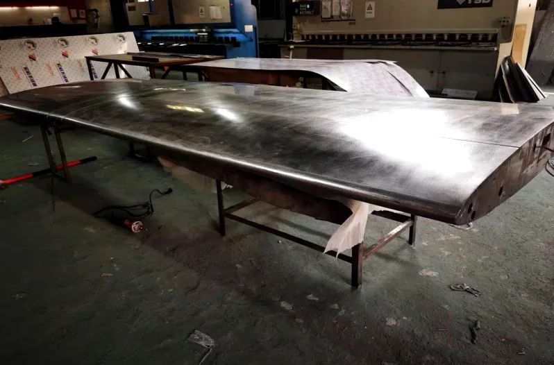
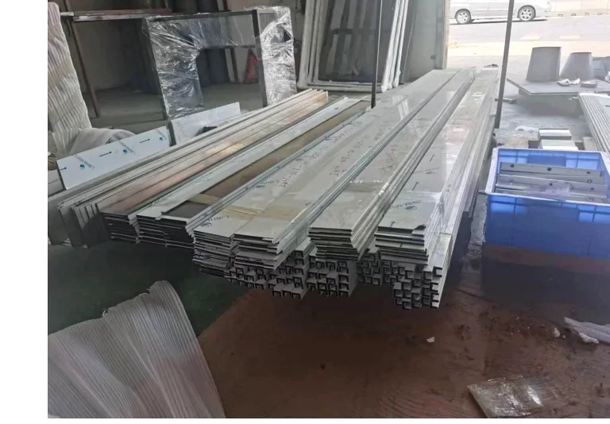
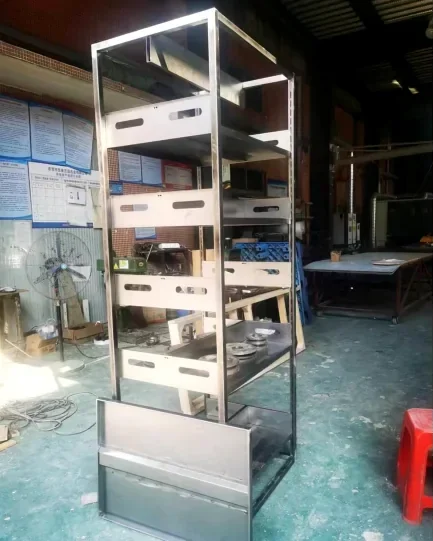

Home / Manufacturing
Custom Metal Fabrication & Manufacturing Capabilities
From Material Preparation to Fabrication, Finishing and Quality Inspection.

Manufacturing Process & Quality Control
Custom metal manufacturing requires more than fabrication alone. We support projects through material and structural review, process planning, fabrication, finishing, assembly and quality inspection against agreed requirements.
Which steps apply depends on your design, materials and finish. We confirm the route for your project in the quotation.

Metal profiles prepared for fabrication.
- Material & Structural ReviewDrawings, materials, structure
- Process PlanningRoute and sequence
- FabricationCutting, bending, forming
- FinishingGrinding, polishing, coatings
- AssemblyWelding and final assembly
- Quality InspectionAgainst agreed requirements
Core Manufacturing Processes
Where we have an authentic photograph of the work, it is shown. Other processes are described in text.

Fabricated metal panels.
Metal Bending & Forming
Metal parts are formed into the shapes your design requires. Bending and forming details depend on the material and the design, and are reviewed before production.

Metal frame structure.
Welding & Assembly
Metal components are joined and assembled into frames and structures. Welding and assembly checks are part of inspection, and the finish you need decides how welds and joints are treated.
Laser Cutting
Metal parts can be cut from your drawings, the starting point for many fabricated products. Suitability depends on the material, thickness and design, confirmed during review.
Grinding & Polishing
Welds and metal surfaces are ground and polished to the finish your product requires. The surface look you need decides the finishing steps.
Surface Finishing
Spray finishing and PVD plating can be arranged to your color and appearance requirements. Some finishing processes are handled by qualified external suppliers, and we confirm the route for each project.
Multi-Material Integration
Metal can be combined with wood, glass and sintered stone / rock slab. Material choices and feasibility are confirmed with you per project.
Materials & Finishes
Material selection and surface finishing are project-specific. We confirm options against your design, quantity and appearance requirements.
Materials
- Stainless steel
- Other metals according to project requirements
- Wood, glass and sintered stone / rock slab for multi-material products
Finishes
- Grinding and polishing
- Spray finishing
- PVD plating
Some surface-finishing processes are handled by qualified external suppliers. We tell you which route applies to your project. Material grades and finish specifications are confirmed in your quotation.
Quality Control
Inspection is coordinated against requirements agreed with you for each project.
This website does not state tolerance values, test equipment or certifications. If your project requires specific tolerances, testing or certification, tell us at the start so we can confirm what is possible.
Workshop Gallery
Real photographs from the workshop. They show the working environment and examples of metal work, not a specific customer order.
Workshop interior.

Metal frames in rows.

Large metal sheet on a workbench.

Metal profiles in stock.

Metal shelving frame.
Goods being loaded into a container.
Frequently Asked Questions
Which manufacturing processes do you support?
We support laser cutting, metal bending and forming, welding and assembly, grinding and polishing, spray finishing, PVD plating and multi-material integration. Suitability depends on the product design, material and finish.
Are all surface finishes done in-house?
No. We support different surface finishes through in-house capabilities and qualified external suppliers, and we confirm the finishing route for your project.
How is quality checked?
Inspection is coordinated against agreed requirements: drawing and specification review, dimensional inspection, visual finish inspection, welding and assembly checks, sample comparison and pre-shipment checks.
Send Us Your Drawings for Manufacturing Review
Send your drawings, samples or reference images and tell us your estimated quantity.